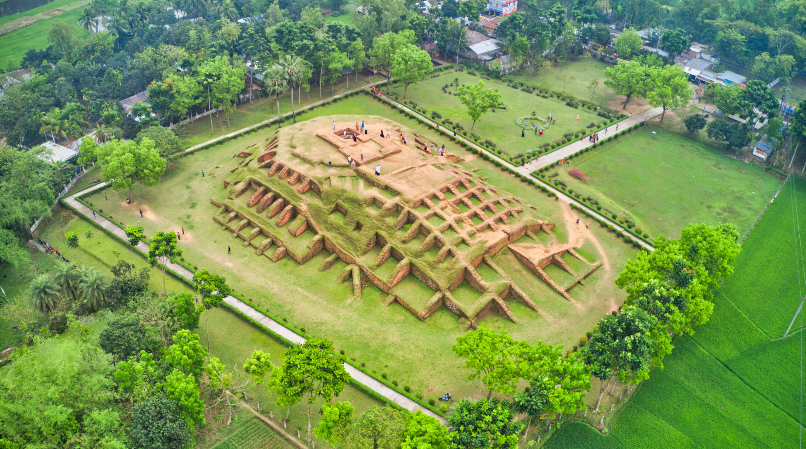
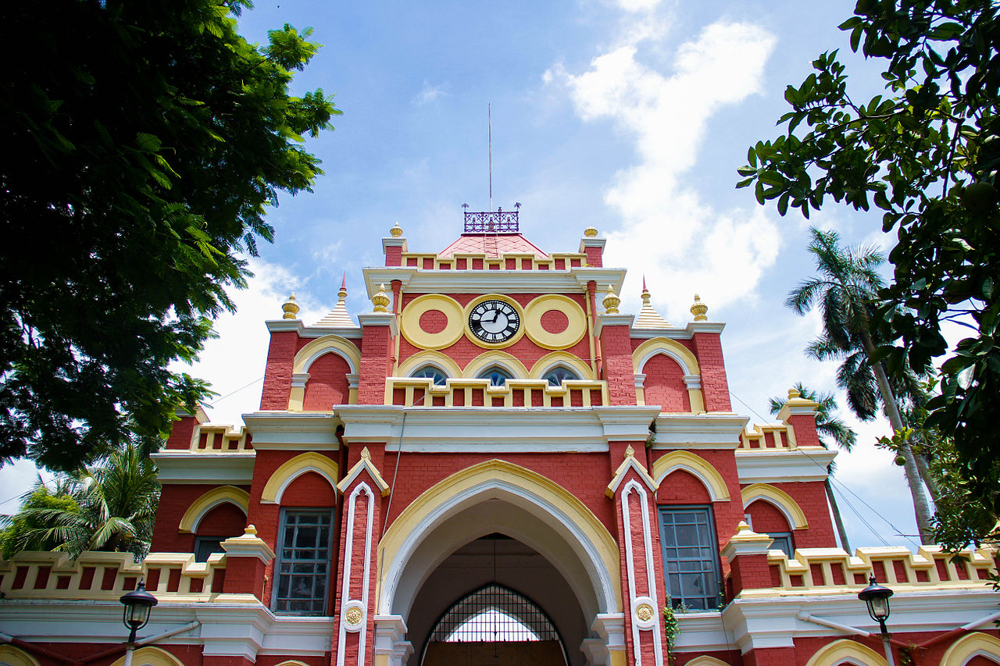

1. Puthia Temple Complex
The Puthia Temple Complex consists of a cluster of notable old Hindu temples in Puthia Upazila, Rajshahi District, Bangladesh. Located 23 km to the east of Rajshahi city, it has the largest number of historic temples in Bangladesh. The temples were built by Hindu Zamindars Rajas of the Puthia Raj family who were noted philanthropists of Rajshahi. The temples have been built in terracotta in a variety of styles combining the typical Jor-bangla architecture with other influences. The Rajbari or Palace of the Raja of Puthia and the Dol Mancha are part of the complex. The temples are laid out around a lake with a sprawling lawn. The Puthia Raj family was established by a holy man named Bhatsacharya, who lived in the 16th century. Raja Man Singh, governor of the Mughal emperor Akbar, confiscated the Jagir of the refractory pathan jagirdar of Rajshahi named Lashker Khan and bestowed the Zamindary on the saintly Bhatsacharya for his learning, but he declined. However, his son Pitambar was granted the Lashkarpur estate permanently. On his death, his son Nilambar received the title of Raja from Emperor Jahangir. The Puthia Royal Family estate was the second largest zamindary and the wealthiest in British Bengal. After India's partition, the then Pakistani government abolished the zamindary system and confiscated all Hindu properties. The Royal Family migrated to India shortly afterwards. This grand temple of Puthia, the Govinda Temple was erected in mid-nineteenth century by the queen of Puthia. The temple is dedicated to Lord Krishna, as the Puthia royal family were converted to Vaishnavism by Radhamohana Thakura. The temple has exquisite terracotta ornamentation depicting the divine romance between Krishna and Radha. The temple's survival is threatened by the newly established college nearby and the lack of conservation efforts.the temple was erected in between 1823 and 1895.

2. Mahasthangarh
Mahasthangarh (Bengali: মহাস্থানগড় Môhasthangôṛ) is one of the most earliest urban archaeological sites so far discovered in Bangladesh. The village Mahasthan in Shibganj upazila of Bogra District contains the remains of an ancient city which was called Pundranagara or Paundravardhanapura in the territory of Pundravardhana. A limestone slab bearing six lines in Prakrit in Brahmi script recording a land grant, discovered in 1931, dates Mahasthangarh to at least the 3rd century BCE.[4][5] It was an important city under the Maurya Empire. The fortified area was in use until the 8th century CE. Mahasthan means a place that has excellent sanctity and garh means fort. Mahasthan was first mentioned in a Sanskrit text of the 13th century entitled Vallalcharita. It is also mentioned in an anonymous text Karatoya mahatmya, circumstantially placed in 12th–13th century. The same text also mentions two more names to mean the same place – Pundrakshetra, land of the Pundras, and Pundranagara, city of the Pundras. Several personalities contributed to the discovery and identification of the ruins at Mahasthangarh. Francis Buchanan Hamilton was the first to locate and visit Mahasthangarh in 1808, C.J.O'Donnell, E.V.Westmacott, and Beveridge followed. Alexander Cunningham was the first to identify the place as the capital of Pundravardhana. He visited the site in 1879. Mahasthangarh (Pundranagar), the ancient capital of Pundravardhana is located 11 km (6.8 mi) north of Bogra on the Bogra-Rangpur highway, with a feeder road (running along the eastern side of the ramparts of the citadel for 1.5 km) leading to Jahajghata and site museum. Buses are available for Bogra from Dhaka and take 4½ hours for the journey via Bangabandhu Jamuna Bridge across the Jamuna River. Buses are available from Bogra to Mahasthangarh. Rickshaws are available for local movement. Hired transport is available at Dhaka/ Bogra. Accommodation is available at Bogra.[8] When travelling in a hired car, one can return to Dhaka the same day, unless somebody has a plan to visit Somapura Mahavihara at Paharpur in the district of Naogaon and other places, or engage in a detailed study.
3. Natore Royal Palace
Natore Rajbari (also known as Pagla Raja's Palace, Natore Palace) was a prominent royal palace in Natore, Bangladesh.[1] It was the residence and seat of the Rajshahi Raj family of zamindars. The famous queen Rani Bhabani lived here and after the death of her husband, expanded both the estate and the palace. In the mid seventeenth century one Kamadev Moitra served as tehsildar to the Puthia Raj family. Kamadev's second son Raghunandan Moitra was selected by the Raja to be his agent at the court of Nawab Murshid Quli Khan, the overlord of all Bengal.[5] When the Nawab moved his court from Dhaka to what became known as Murshidabad he took Raghunandan with him and appointed him his Dewan or minister. The Nawab proceeded to confiscate the estates of zamindars who failed to conform to his new regulations, and a number of such estates were acquired by Ramjivan Moitra, the elder brother of his Dewan Raghunandan.[6] In due course Ramjivan was given the title of Raja and set up his headquarters in Natore. His estate was generally referred to as the "Rajshahi Zamindari". The estate had an area of nearly 13,000 square miles and included not only much of North Bengal but also large parts of the areas later comprising the administrative districts of Murshidabad, Nadia, Jessore, Birbhum and Burdwan.[7] To rule this extensive Zamindari and collect revenue properly, he divided all Zamindaris into three centers. These were Sherpur in Bogra district, Baranagar in Murshidabad district and Natore. Baranagar was located half a mile north of Azimnagar railway station by the administrative advantages. Rarely Raghunandan had to go to Nawab Darbar, so he stayed at Baranagar most of the time. Staying at Baranagar helped him to maintain the royal duty of Natore. The first palace or Rajbari at Natore was built by Raja Ramjivan Moitra. The palace was surrounded by two sets of moats which are still extant.[5] After the division of the estate a separate palace was built for the junior branch of the dynasty. Many of the original buildings were destroyed by the earthquake of 1897 and subsequently rebuilt or replaced. In 1797, following the death of Rani Bhabani's adopted son Raja Ramkrishna, the Natore estate was divided between his two sons Bishwanath and Sibnath,[5] and thenceforth both a Senior and a Junior royal house remained in existence until the abolition of all zamindar estates in 1950.

4. Uttara Ganabhaban
The Uttara Ganabhaban (Bengali: উত্তরা গণভবন, romanized: Uttora Gonobhobon, lit. 'Northern People's House') is an 18th-century (1734) royal palace also known as Dighapatia Palace (Bengali: দিঘাপতিয়া রাজবাড়ী, romanized: Dighapotiya Rajbari) as it was formerly the seat of the Dighapatia Raj, an aristocratic landed estate in the East Bengal of India. It is a fine example of a jomidar bari (country house). It was built by Raja Doyaram who was the Dewan (minister) of Rani Bhavanee. It has a round clock on its front gate with a large bell and a clock room. The clock was imported from Italy. It also has a beautiful garden full of various foreign trees and Italian marble stone statues of women. It is located near Natore town in North Bengal.[citation needed] It serves as the principal residence of the Bangladeshi Prime Minister in the northern part of the country.[1] It has been used as a ceremonial site for receiving foreign ambassadors. There has been a house on the site since the early 18th century, when the Nawab of Bengal rewarded Dayaram Roy for suppressing a rebellion. Roy was awarded the title of Jagirdar and given the zamindari of vast tracts of land in Jessore, Rajshahi, Bogra and Mymensingh. When the British Empire enforced the permanent settlement in Bengal, the Roys were recognised as landed Maharajas. They were avid followers of European influence, fashion, art, and culture. Their palace was developed on the outskirts of Natore in the 19th century. The town of Natore served as the headquarters of Rajshahi Division in the Bengal Presidency, and thus was an important administrative centre. Following Partition in 1947, the estate was formally abolished during major land reforms in East Bengal. On 24 July 1967, it was designated as a gubernatorial residence by Abdul Monem Khan, the Governor of East Pakistan. The palace was used by President Ayub Khan as a retreat when Bangladesh was a part of Pakistan as its eastern wing. After the independence of Bangladesh, Prime Minister Sheikh Mujibur Rahman, the founding father of the Bangladeshi republic, declared the palace as his official residence in northern Bangladesh on 9 February 1972.[2] It has since been used by successive Bangladeshi heads of government for holding cabinet, political and diplomatic meetings outside the capital.
5. Somapura Mahavihara
Somapura Mahavihara (Bengali: সোমপুর মহাবিহার, romanized: Shompur Môhabihar) in Paharpur, Badalgachhi, Naogaon, Bangladesh is among the best known Buddhist viharas, monasteries, in the Indian Subcontinent and is one of the most important archaeological sites in the country. It is also one of the earliest sites of Bengal, where significant numbers of Hindu statues were found. It was designated as a UNESCO World Heritage Site in 1985. It is one of the most famous examples of architecture in pre-Islamic Bangladesh. It dates from a period to the nearby Halud Vihara and to the Sitakot Vihara in Nawabganj Upazila of Dinajpur District. A number of monasteries grew up during the Pāla period in ancient India in the eastern regions of the Indian subcontinent, comprising Bengal and Magadha. According to Tibetan sources, five great Mahaviharas (universities) stood out: Vikramashila, the premier university of the era; Nalanda, past its prime but still illustrious; Somapura Mahavihara; Odantapurā; and Jaggadala.[2] The mahaviharas formed a network; "all of them were under state supervision" and there existed "a system of co-ordination among them ... it seems from the evidence that the different seats of Buddhist learning that functioned in eastern India under the Pāla were regarded together as forming a network, an interlinked group of institutions," and it was common for great scholars to move easily from position to position among them. Xuanzang of China was a noted scholar who resided at the Somapura Mahavihara (the largest university in ancient India), and Atisa traveled from Bengal to Tibet to preach Buddhism. The earliest form of the Bengali language began to the emerge during the eighth century.The excavation at Paharpur, and the finding of seals bearing the inscription Shri-Somapure-Shri-Dharmapaladeva-Mahavihariyarya-bhiksu-sangghasya, has identified the Somapura Mahavihara as built by the second Pala king Dharmapala (circa 781–821) of Pāla Dynasty. Tibetan sources, including Tibetan translations of Dharmakayavidhi and Madhyamaka Ratnapradipa, Taranatha's history and Pag-Sam-Jon-Zang, mention that Dharmapala's successor Devapala (circa 810–850) built it after his conquest of Varendra.[4] The Paharpur pillar inscription bears the mention of 5th regnal year of Devapala's successor Mahendrapala (circa 850–854) along with the name of Bhiksu Ajayagarbha.[4] Taranatha's Pag Sam Jon Zang records that the monastery was repaired during the reign of Mahipala (circa 995–1043 AD).

6. Varendra Research Museum
Varendra Museum (Bengali: বরেন্দ্র জাদুঘর) is a museum, research centre, and popular visitor attraction at the heart of Rajshahi and maintained by Rajshahi University in Bangladesh. It is considered the oldest museum in Bangladesh. It was the first museum to be established in East Bengal in 1910. The museum started out as the collection for Varendra Anushandan Samiti (or Varendra Investigation Society) and got its current name in 1919. The Rajahs of Rajshahi and Natore, notably prince Sharat Kumar Ray, donated their personal collections to Varendra Museum. Varendra refers to an ancient Janapada roughly corresponding to modern northern Bangladesh. Varendra (or Barind) was a region of Bengal, now in Bangladesh. It included the Pundravardhana or Pundra Kingdom region. According to Cunningham the boundary of Varendra was the Ganges and the Mahananda on the west, the Karatoya on the east, the Padma on the south, and the land between Koochbihar and the Terai on the north. The Varendra Brahmins originated from this region. Ancient Bengal did not have any Brahmins in its community. It is popularly believed that Brahmins were brought in to preach Hindutva, though really not the Vedic Hinduism as it is commonly believed, but more of the Pouranik Hinduism type, which evolved after Buddhism flourished. This Pouranik Hinduism is what we know as Brahmanism. Varendra (Barendra) Bhumi, i.e., modern-day North Bengal, had its Brahminism awakening soon after the south got its share. Shyamal Varman, a Kshatriya King brought five Brahmanas from Kanouj — Sanaka, Bhardwaja, Savarna, Sandilya, and Vasistha. The Bhatariya, Maitreya, Satar, Baghshree and Laheria villages soon gave birth to the Brahmin clans of Bhaduri, Moitra, Sanyal, Bagchi and Lahiri. These came to be known as the Varendra (Barendra) Brahmins.